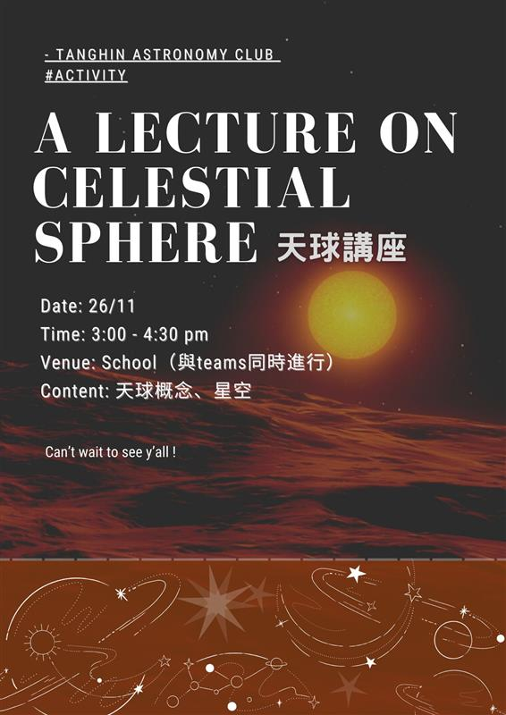
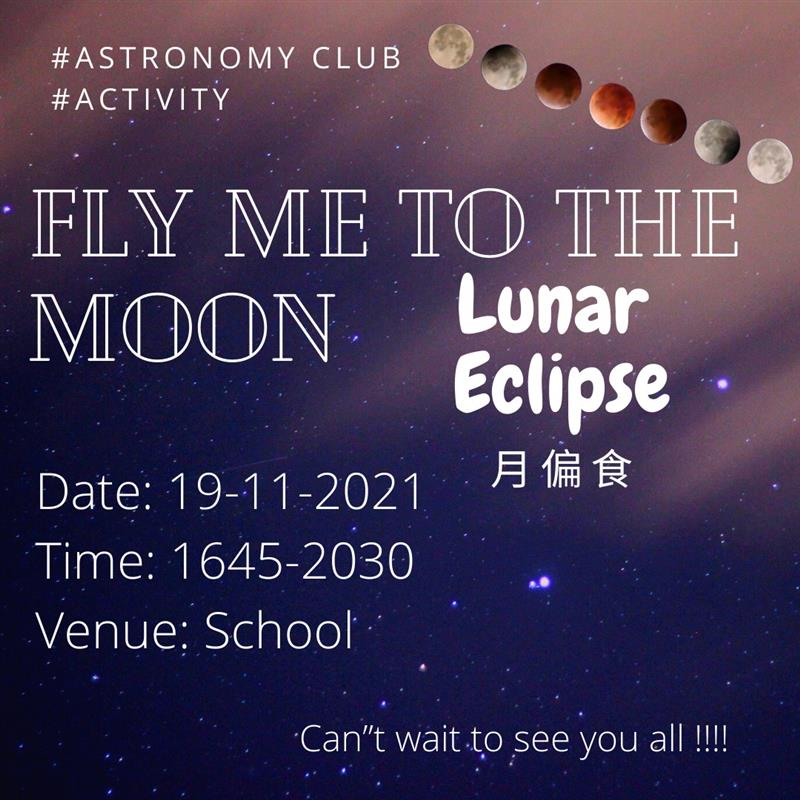
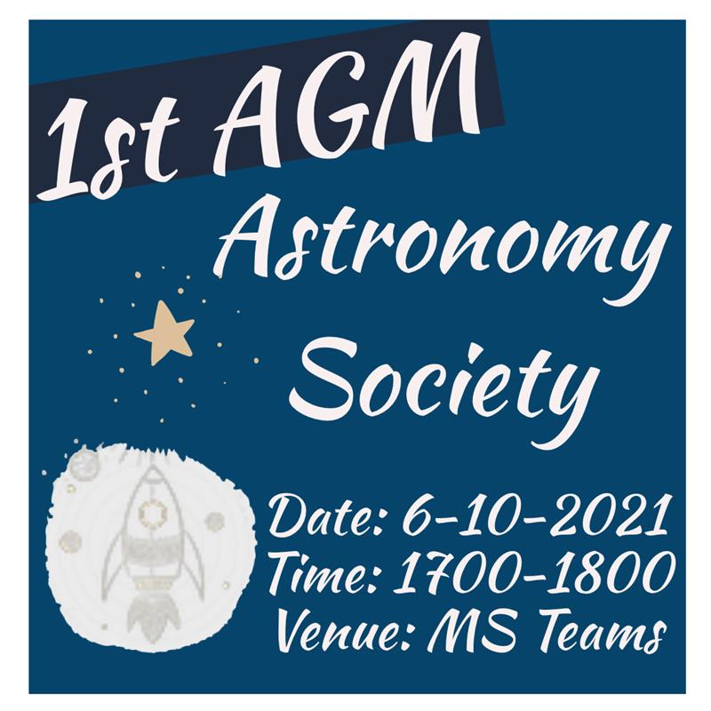

Post Time: 2021/11/27
Poster: Wong Chun Fung
2nd Activity Stargazing
Hola!!!天文學會將會喺12月10號舉行第一次觀星活動！！！🌌🌌
如果大家想睇星嘅記得踴躍報名參加!!🤤
日期：10-12-2021 (後備日: 17-12-2021)
時間：1830-2030
地點：學校
名額：30人
費用：會員：免費 ; 非會員：$20
.
*全校打針同學已過七成所有同學都可以參加!!!
*在Link 報名: https://forms.office.com/r/TMmhRgDd7r
*所有參加者贈送星圖一張

Post Time: 2021/11/27
Posted by: Wong Chun Fung
中文學會 x 天文學會 中古星空講座
大家經常看上天空總會看到滿天繁星🌟
這次天文學會聯同中文學會合辨中古星空講座
為大家介紹黃道12宮
而且這次活動在觀星活動前 好讓同學可以更了解滿天繁星的運作
·
日期：12月10日
時間：下午四時至五時
地點：學校
*只限天文學會及中文學會會員
*所有實體同學都可實體參與
*teams 同時直播
·
在link 報名：https://forms.office.com/r/Xppfk57EAE

Post Time:
Posted by: Wong Chun Fung
2nd Activity 天球星空講座
大家旅行唔知玩得開唔開心呢,無論開心又好好攰也好都唔緊要
因為天文學會又有新攪作啦-天球星空講座
.
唔知道大家平時會唔會留意個天呢🤔🤔
咁如果大家平時有冇留意個天嘅話會唔會想知道個天係點運作嘅呢🤤
如果大家唔知但係又有興趣嘅話就一定要嚟呢一個講座啦
我哋除咗個天嘅運作之外仲會介紹天上面唔同嘅星星.
.
Date: 26/11
Time: 3.00-4.00
Venue: School (Ms Team同步進行)
Fee: $0
.
*All Members can attend.
*22/11 Deadline, Please fill in the registration form As Soon As Possible
*Feel Free to contact 4C11 Wong Chun Fung or Mr Ho Nok Chun if you have any problem.
*基於政府防疫措施,所有參與午後課外活動之參加者必須先接種新型冠狀病毒疫苗.
.
Registration Form: https://forms.office.com/r/x1VPS1Ytut

Post Time: 2021/10/22
Posted by: Wong Chun Fung
1st Activity Fly me to the moon- Lunar Eclipse 月偏食
Fly me to the moon- Lunar Eclipse 月偏食
Date: 19-11-2021
Time: 1645-2030
Venue: School
Number of participants: 25 (先到先得)
*此活動會於10月27日星期三下午10時開始接受報名, 屆時報名表格(MS Form)將會上載於Teams, 先到先得!
*參加者必須接種新型冠狀病毒疫苗
*會因應當天天氣情況而決定會否進行此活動
*會於當日下午三時作最後通知

Post Time: 2021/9/23
Posted by: Wong Chun Fung
1st AGM
Hello Guys,
We are going to hold our first AGM soon.
Date: 6-10-2021
Time:1700-1800
Venue: MS Teams
*All Members must attend!!!
*如果你哋親愛嘅主席冇發神經講廢話就應該唔會遲放
*If you are not avalible please contact me or Mr Ho ASAP.